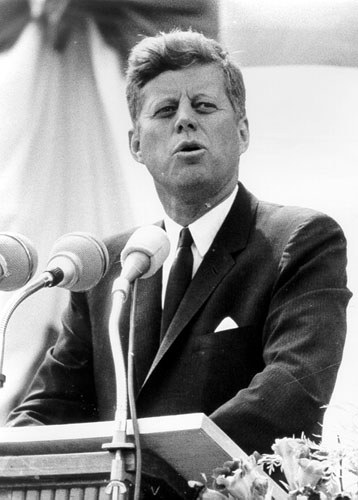

Resultados vs Procesos
Recuerdo un partido de futbol entre dos selecciones nacionales, una de ellas tenía un director técnico que llegó vestido con un elegante traje, como suelen hacerlo los entrenadores europeos. El otro DT en cambio llevaba un buzo deportivo.
El estilo de dirección de cada uno también era diferente. Mientras el primero se mantuvo sentado en la banca durante todo el partido, el segundo pasó casi todo el match gritando y dando órdenes desde el borde de la cancha.
Desde el punto de vista del espectáculo, el equipo del DT con buzo deportivo jugó mejor, un estilo más vistoso, de permanente ataque, “jogo bonito”, como dicen los brasileños.
Aunque en el rostro del DT de traje elegante la preocupación se reflejó en varias ocasiones, su cara llevaba una sonrisa de satisfacción al final, pues fue su equipo ganador. El de buzo se dirigió a los camarines con la frustración en sus puños apretados.
Dos estilos de liderazgo, uno que define los objetivos y deja al equipo realizar su labor, el otro más micro controlador. Pero acá la actitud pragmática del DT de traje, quien tiene muy claro que lo que importa es meter goles, es la que asegura el éxito.
He escuchado discusiones sobre qué es más importante si el proceso o el resultado. Esa discusión no tiene sentido, el resultado es siempre más importante que el proceso. El proceso está subordinado al resultado.
Cuando definimos un objetivo lo que hacemos es declarar primero el resultado esperado.
Cuando se reflexiono sobre esto el ejemplo al que recurro con frecuencia es el del mandato de Kennedy de enviar un hombre a la luna:
“I believe that this nation should commit itself to achieving the goal, before this decade is out, of landing a man on the Moon and returning him safely to the Earth.”
¨Creo que esta nación debe comprometerse a alcanzar la meta, antes del final de esta década, de colocar un hombre en la Luna y devolverlo sano y salvo a la Tierra"

En este mandato Kennedy establece claramente el objetivo1, el que consta de tres partes:
- Qué se debe hacer: colocar un hombre en la luna
- Cuándo se debe hacer, el plazo: al final de la década.
- El criterio de calidad, o satisfacción: retornarlo de forma segura a la Tierra.
¿Cuantas metas u objetivo mal definidos vemos?
Bromeando una vez decíamos que si el objetivo en Chile fura colocar un hombre en el espacio, una vez que estuviera allí orbitando el presidente preguntaría qué cuando retornaría el astronauta a la tierra, la respuesta obvia sería: “¿volver? ¡A mi nadie me dijo que teníamos que hacerlo volver a la tierra!”
Así que Kennedy, tiene la precaución de ser explícito al definir la meta.
Eso es un error bastante común, yo lo he cometido varias veces, de olvidar estas tres cosas. Seamos explícitos y claros con nuestros objetivos, pero además no olvidemos que lo importante es lograrlos. Debemos meter goles, jugar bonito es un plus, pero lo importante es ganar al final.
Por supuesto, para lograr resultados es muy importante la composición del equipo, pero eso es algo de lo que hablaremos después.
-
O el por qué, aunque también puede haber distinciones superiores, como la misión y la visión que se encargan de definir claramente el por qué y el para qué. ↩︎